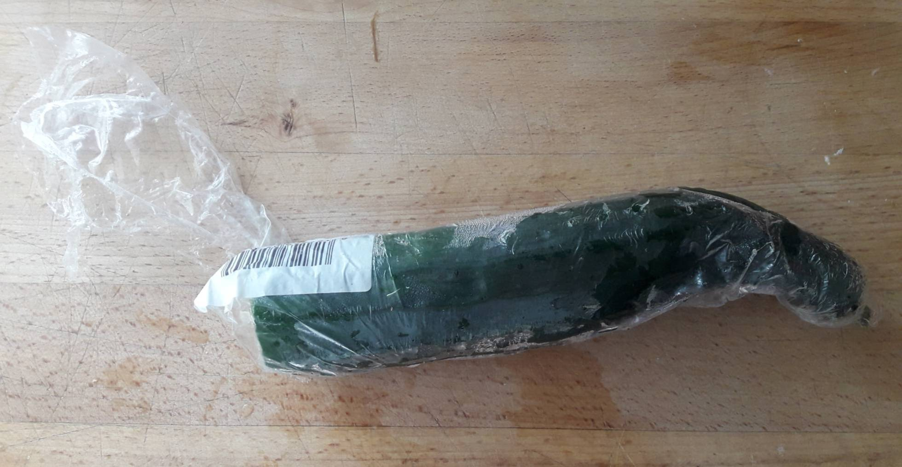

Having lived in Madrid for almost two years, I have been struck by the extent of single-use and disposable plastic, styrofoam and polystyrene. Plastic reigns supreme, it is everywhere. Worringly, there often appears to be a carefree attitude toward the damage plastic and other trash has on the environment, the city’s streets and surrounding countryside. Let me be clear – I am from London, which, like much of the world, has a great deal of plastic pollution and waste. My observations, questions and potential solutions are not judgments or a sense of moral superiority. This is about the world’s addiction to plastic and how it manifests in Madrid.
Given most of us wash our fruit before eating it, why wear plastic gloves at all?"
The use of throwaway plastic appears deeply ingrained here. In the bakery and fresh-produce sections of supermarkets, single-use plastic gloves are not only encouraged by staff but insisted upon for, I assume, reasons of hygiene. Shoppers wear plastic gloves, place fruit in plastic bags and often divide different fruits into yet more plastic bags. This is not only wasteful, it also makes little sense. Given most of us wash our fruit before eating it or don’t eat many fruit’s skins and rinds, why wear plastic gloves at all?
The non-loose fruit and vegetables are often wastefully packaged. A single squash or a mango might be placed in a styrofoam container then wrapped in plastic. Tiny portions of jamón are wrapped in packaging weighing more than the jamón itself. The saving grace for most supermarkets is the small charge they place on plastic bags to reduce plastic use. Earlier this year, the supermarket chain Mercadona introduced bags made from 50-70% recycled plastic, and reusable raffia bags at checkouts. The chain also intends to eliminate all smaller single-use bags by 2021
While these initiatives are an encouraging forward step, the fight against plastic is not helped by many smaller independent fruit and vegetable stores, or fruterías. Here, single-use plastic gloves are used liberally, and customers are not charged for bags. I bring my own, or carry shopping home in my hands from local stores – shopkeepers often express surprise, even amusement when I turn down plastic. There is a kind of running joke that I am the eccentric English guy with his own bags. Why on Earth don’t I want a bag? How odd I am.
With the overuse of plastic comes the inevitable litter that accompanies it. As mentioned in a previous blog, I am a keen cyclist and often ride in the mountains north of the city and the rolling roads to the south. On La Radio, a winding hill road near the small town of Morata de Tajuna, I look to my right and see empty Mahou beer cans, Coke bottles and often bottles of urine along the roadside. These are country roads surrounded by fields, shrubland and olive groves, a once-pristine place now polluted.
There the must be more governmental campaigns focused on the dangers of plastic pollution"
Another example of plastic waste can be seen at the famous sandwich shop El Capricho Extremeño, close to Madrid’s El Rastro Sunday market. The shop is a favorite for both locals and tourists who join the long queue to buy delicious tostada-style open sandwiches covered in octopus, ham, tuna and other tasty ingredients. Every Sunday, hundreds of sandwiches are sold and served on styrofoam trays. Drinks are served in plastic cups, often with non-recyclable plastic straws. Walking near the shop, there is one large yellow recycling bin, far from big enough for all the garbage. By around midday, the bins are full and plastic covers the street, never to be recycled.
The solution to ending the plastic epidemic is not simple. Madrid, like much of the world, has a dependency on this so-called “wonder” material. It is easy to see why. Plastic is cheap, versatile and simple to use. However, more education is required to show how plastic damages the world. There must be more governmental campaigns focused on the dangers of plastic pollution. There should be an increase in education directives in schools to teach children about plastic alternatives, disposable packaging and recycling. Big brands and supermarkets must take greater responsibility for their damaging contribution towards the plastic crisis. Finally, if governments and big businesses won’t help, citizens need to work together to reduce plastic use, and help keep the city and surrounding countryside pristine, so they can be enjoyed for generations to come.
Objetivo semanal 02